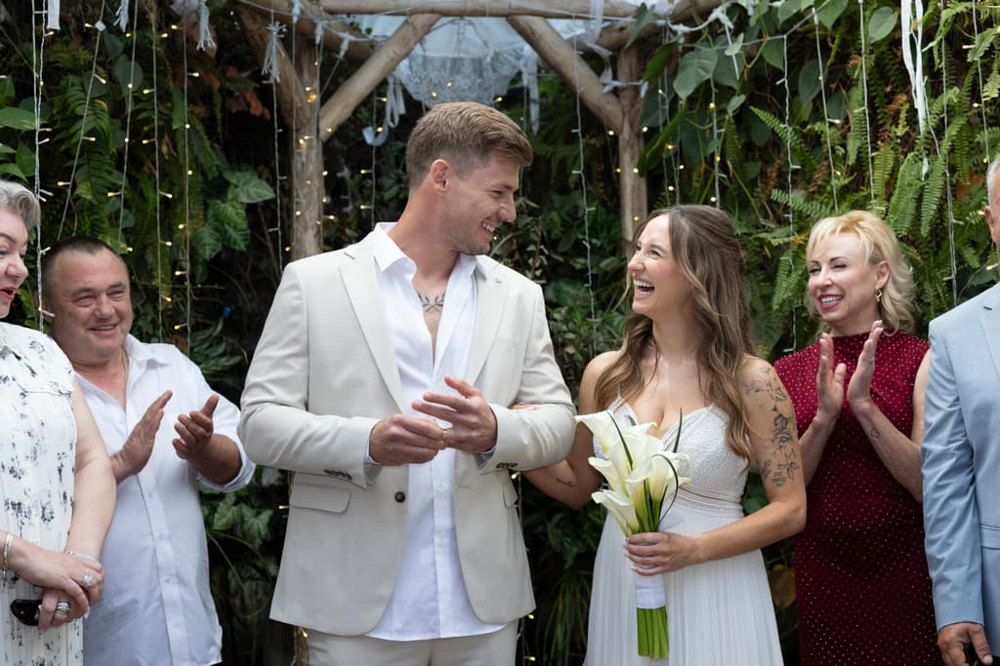
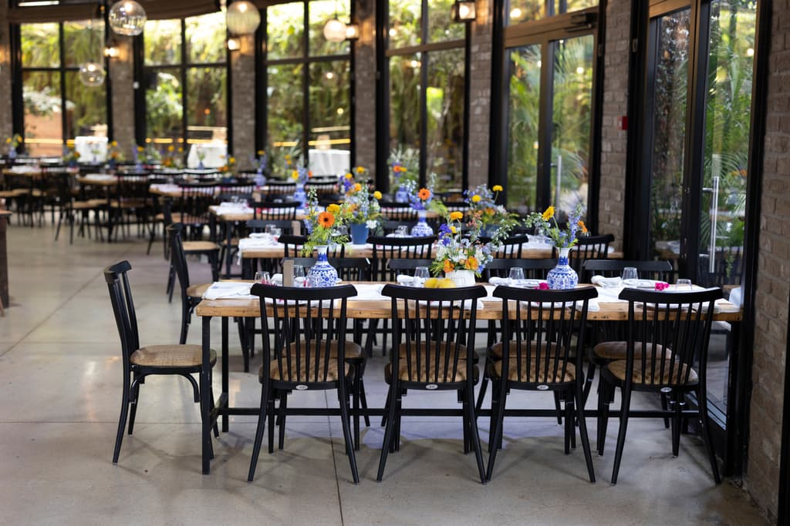

היוקרה האמיתית היא פשוט להיות נוכחים עם האנשים שאתם אוהבים.
שירות ה-Event Concierge נוצר כדי להעניק לאורחים שלכם חוויית אירוח פרימיום, ולכם – שקט נפשי מוחלט.
בואו נתחיל לתכנן את הרגע שלכם
אמנות האירוח
כל אורח שהזמנתם הוא עולם ומלואו. אנחנו הפנים שלכם מול האורחים והספקים, כדי שאתם תוכלו פשוט להיות נוכחים ברגע, לחגוג ולארח באלגנטיות.
אפס התעסקות מצדכם
מאישורי הגעה והושבה מוקפדת ועד לבניית תפריט שף וניהול זרימת המנות בשטח. החיבור ההדוק בין המטבח לצוות הניהול מבטיח סנכרון מושלם — אתם באים רק כדי לחגוג.
איש מקצוע צמוד, ששולט בכל פרט
איש מקצוע אחד מלווה אתכם מהפגישה הראשונה ועד אחרון האורחים — מכיר את לוח הזמנים, את הספקים ואת הבקשות של המשפחה, ונמצא איתכם באולם ביום האירוע. הכל עובר דרכו — אתם לא מסבירים את עצמכם מחדש לכל ספק, ולא מתאמים ביניהם בעצמכם.
תשומת לב לכל אורח
ביום האירוע תשומת הלב המלאה שלנו מופנית אליהם: החל מהכוונה אישית למקומות הישיבה, דרך דאגה למנות מיוחדות, ועד למענה אישי ודיסקרטי לכל בקשה.
הסטנדרט שלנו - השקט שלכם.
תקשורת אישית ואלגנטית
אנחנו לא "עוד מערכת אוטומטית". ניהול אישורי ההגעה נעשה בצורה אנושית, חמה ומכבדת, תוך עבודה מול האורחים שלכם ברגישות שיא. אנחנו מוודאים ב-100% מי מגיע, אוספים העדפות תזונה (טבעוני/צליאק) ודואגים שכל מוזמן ירגיש רצוי ומוערך עוד לפני שהאירוע התחיל.

הושבה חכמה וזורמת
בחתונות בטבע או בצהריים, הדינמיקה שונה ומשוחררת יותר, אבל רגע הארוחה קריטי. תכנון הושבה מוקפד מוודא שאף כסא לא יישאר יתום. ביום האירוע, דיילות ההושבה שלנו, לבושות באלגנטיות, ילוו בחיוך כל אורח למקומו – במקצועיות של מסעדת מישלן וביחס של משפחה.
נוכחות מנהל אירועים בשטח
מהרגע שהאורח הראשון חונה ועד אחרון הרוקדים. מנהל שטח צמוד שדואג לקבלת הפנים, זרימת האלכוהול, תקינות המנות, ופתרון שקט לכל תקלה — לרוב עוד לפני שידעתם שקרתה. אנחנו הפילטר שמפריד ביניכם לבין כאב הראש, משאירים לכם תפקיד אחד בלבד: ליהנות, לרקוד, ולחגוג את היום שלכם בשמש.
מה אנחנו לוקחים על עצמנו
ניהול אירוע
אתם מחליטים, אנחנו מבצעים.
- פגישת היכרות ותכנון מוקדם
- בניית לוח זמנים מדויק ליום האירוע
- תיאום מלא מול כל הספקים
- נוכחות מלאה ביום האירוע
הפקה מלאה
מהחלום ועד המציאות — אנחנו מטפלים בהכל.
- קונספט ועיצוב
- איתור וניהול ספקים
- ניהול תקציב שוטף
- לוגיסטיקה ותיאום מלא
כולל את כל מה שבניהול אירוע
אישורי הגעה
כל מוזמן, אחד־אחד.
- פנייה אישית ומכבדת לכל מוזמן
- ווידוא של 100% מהרשימה — מי מגיע, וכמה
- איסוף העדפות ומגבלות תזונה — טבעוני, צליאק, אלרגיות
- תזכורות למי שטרם השיב, בלי להציק
- תזכורת ביום האירוע עם קישור ניווט
- מענה לשאלות של האורחים לאורך כל הדרך
- תמונת מצב מעודכנת אצלכם בכל רגע
שירות עצמאי — אפשר לקחת רק אותו.
שדרוג: סידורי הושבה ודיילות ההושבה ביום האירוע.
בשיחת ההיכרות נבין מה אתם צריכים ונתאים את ההיקף — היא חינם ולא מחייבת.
זוגות מספרים
ארטיום סייע לנו בהפקת החתונה — החל מחתימת החוזה מול האולם ועד לבחירת ספקים לכל דבר שחשבנו עליו. הוא היה זמין, ותמיד השקיע מאמץ וזמן בכל דבר שביקשנו ממנו. איזה כיף שיש ארטיום.
ההבטחה שלנו אליכם פשוטה: אנחנו מנצחים על כל פרט ופרט מאחורי הקלעים, כדי להעניק לכם חופש מוחלט!
שאלות שנשאלות לפני שמתחילים
מה בדיוק כולל ניהול הערב?
ליווי מלא של הערב מהרגע שהאורח הראשון חונה ועד אחרון הרוקדים: קבלת פנים, הכוונת אורחים למקומם, תיאום מול הספקים והמטבח, בקרה על זרימת המנות והאלכוהול, ופתרון שקט לכל מה שצץ בדרך. אתם לא נדרשים להתעסק בכלום.
אפשר לקחת רק אישורי הגעה?
זה שירות בפני עצמו, ואפשר לקחת רק אותו — בלי ניהול ובלי הפקה. אנחנו מנהלים את כל התהליך מול האורחים: מי מגיע, כמה סועדים, והעדפות תזונה כמו צמחוני, טבעוני או ללא גלוטן — ומגיעים ליום האירוע עם תמונה מדויקת.
אתם מטפלים גם בהושבה?
כן, כשדרוג לשירות אישורי ההגעה. הוא נשען על אותה רשימה: תכנון ההושבה נעשה מראש מול האורחים שכבר אישרו, וביום האירוע דיילות ההושבה שלנו מלוות כל אורח למקומו — בלי תורים בכניסה ובלי כיסא שנשאר יתום.
מה קורה אם ספק מאחר או מבריז ביום האירוע?
זו בדיוק הסיבה שאנחנו שם. הטיפול נעשה מולנו ולא מולכם — אתם לרוב תשמעו על זה רק אחרי שזה כבר נפתר, אם בכלל. אנחנו הפילטר שמפריד ביניכם לבין כאב הראש.
כמה זה עולה?
תלוי מה הערב צריך — מספר האורחים, המקום, והיקף הליווי. אחרי שיחת היכרות קצרה נשלח אליכם הצעה מדויקת, בלי הפתעות ובלי כוכביות.
איך מתחילים?
משאירים פרטים כאן למטה, ונחזור אליכם לשיחת היכרות של רבע שעה. נבין מה אתם מתכננים, נענה על כל מה שפתוח, ורק אחר כך נשלח הצעה.
נשמח להכיר ולתכנן יחד
השאירו פרטים ונחזור אליכם לשיחת היכרות אישית.